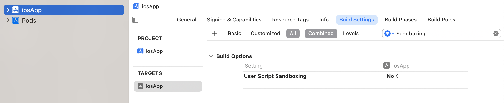

Use a Kotlin Gradle project as a CocoaPods dependency
To use a Kotlin Multiplatform project with native targets as a CocoaPods dependency,
complete the initial configuration
. You can include such a dependency in the Podfile of the Xcode project by its name and path to the project directory containing the generated Podspec.
This dependency will be automatically built (and rebuilt) along with this project. Such an approach simplifies importing to Xcode by removing a need to write the corresponding Gradle tasks and Xcode build steps manually.
You can add dependencies between a Kotlin Gradle project and an Xcode project with one or several targets. It's also possible to add dependencies between a Gradle project and multiple Xcode projects. However, in this case, you need to add a dependency by calling
pod install
manually for each Xcode project. In other cases, it's done automatically.
Xcode project with one target
Create an Xcode project with a
Podfile
if you haven't done so yet.
Make sure to disable
User Script Sandboxing
under
Build Options
in the application target:

Add the path to your Xcode project
Podfile
with
podfile = project.file(..)
in the
build.gradle(.kts)
file of your Kotlin project. This step helps synchronize your Xcode project with Gradle project dependencies by calling
pod install
for your
Podfile
.
Specify the minimum deployment target version for the Pod library.
Add the name and path of the Gradle project you want to include in the Xcode project to
Podfile
.
use_frameworks!
platform :ios, '13.5'
target 'ios-app' do
pod 'kotlin_library', :path => '../kotlin-library'
end
Run
pod install
in you project directory.
When you run
pod install
for the first time, it creates the
.xcworkspace
file. This file includes your original
.xcodeproj
and the CocoaPods project.
Close your
.xcodeproj
and open the new
.xcworkspace
file instead. This way you avoid issues with project dependencies.
Run
Reload All Gradle Projects
in IntelliJ IDEA (or
Sync Project with Gradle Files
in Android Studio) to re-import the project.
Xcode project with several targets
Create an Xcode project with a
Podfile
if you haven't done so yet.
Add the path to your Xcode project
Podfile
with
podfile = project.file(..)
to
build.gradle(.kts)
of your Kotlin project. This step helps synchronize your Xcode project with Gradle project dependencies by calling
pod install
for your
Podfile
.
Add dependencies to the Pod libraries you want to use in your project with
pod()
.
For each target, specify the minimum deployment target version for the Pod library.
kotlin {
iosArm64()
tvosArm64()
cocoapods {
summary = "CocoaPods test library"
homepage = "https://github.com/JetBrains/kotlin"
iosArm64.deploymentTarget = "13.5"
tvosArm64.deploymentTarget = "13.4"
pod("FirebaseAuth") {
version = "10.16.0"
}
podfile = project.file("../severalTargetsXcodeProject/Podfile") // specify the path to the Podfile
}
}
Add the name and path of the Gradle project you want to include in the Xcode project to the
Podfile
.
target 'iosApp' do
use_frameworks!
platform :ios, '13.5'
# Pods for iosApp
pod 'kotlin_library', :path => '../kotlin-library'
end
target 'TVosApp' do
use_frameworks!
platform :tvos, '13.4'
# Pods for TVosApp
pod 'kotlin_library', :path => '../kotlin-library'
end
Run
pod install
in you project directory.
When you run
pod install
for the first time, it creates the
.xcworkspace
file. This file includes your original
.xcodeproj
and the CocoaPods project.
Close your
.xcodeproj
and open the new
.xcworkspace
file instead. This way you avoid issues with project dependencies.
Run
Reload All Gradle Projects
in IntelliJ IDEA (or
Sync Project with Gradle Files
in Android Studio) to re-import the project.